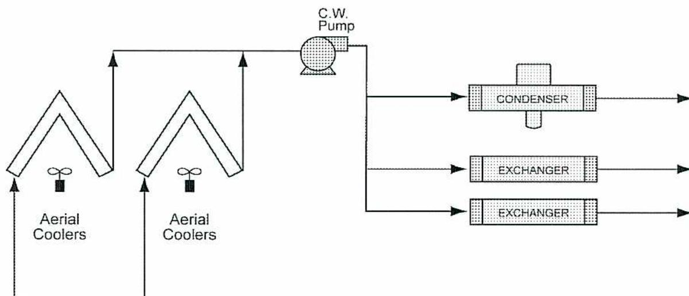
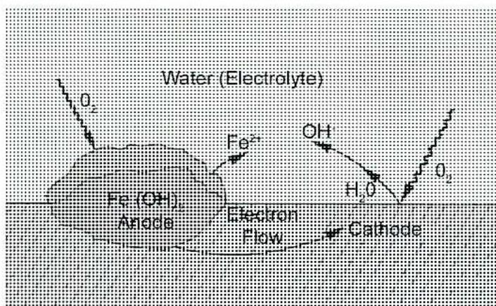
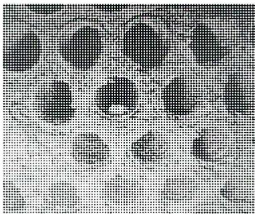
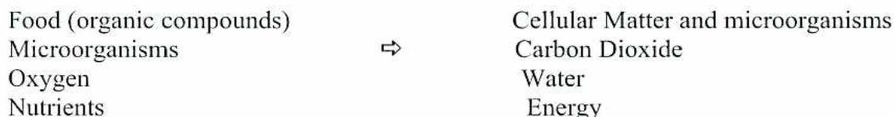
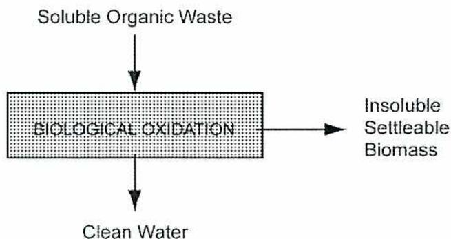
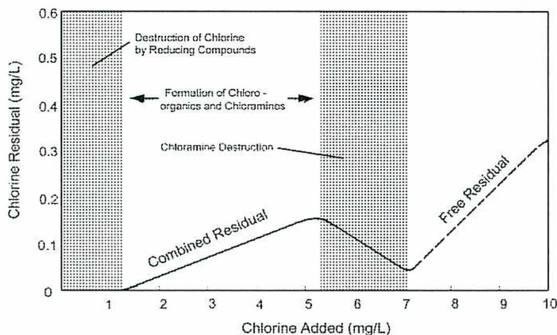

When you complete this learning material, you will be able to:
Discuss water treatment applications for cooling water, wastewater, and potable water.
You will specifically be able to complete the following tasks:
List the water impurities of concern in a cooling water system and the effects caused by each one.
Cooling water systems are classified into three basic types: once through, closed or recirculating, and open recirculating (evaporative).
In a once-through system, shown in Fig. 1, water is pumped from a lake or river. It is piped through the plant and provides cooling for heat exchangers, condensers, and other heat loads. After removing excess heat energy from processes within the plant, the warmed cooling water is returned to the lake or river to release the heat energy that has been acquired. As the water is passed through the plant only once, use of chemical treatment is kept to a minimum. Typically, the water is screened to remove any large pieces of debris and fish. In some cases, small amounts of corrosion inhibitor may be added. An oxidizing biocide, such as chlorine or sodium hypochlorite, may be added to control microbiological activity.

Figure 2
Closed Recirculating System
An open recirculating system, shown in Fig. 3, uses a cooling tower or evaporation pond to cool the water. The water is pumped from the tower or pond through the plant heat exchangers. The water is recycled through the plant and the cooling tower as many times as is practical, in order to reduce the requirement for water make-up. The heat of evaporation of the evaporated water in the cooling tower is taken from the water that is not evaporated. Evaporative cooling is very efficient in that little make-up water is required. A much smaller stream of water from the lake or river is used compared to once-through systems. Only the water lost to evaporation and blowdown has to be made up. The remaining water becomes more concentrated with minerals as a portion of it is evaporated. A stream of water is removed from the cooling tower as blowdown to keep the concentration within limits. Most recirculating systems are concentrated up to 7–12 times the inlet concentration levels. The term used for concentration is cycles of concentration.
As open recirculating systems are very common in power and process plants, the remainder of this module on corrosion control and scale control refers to open recirculating systems using cooling towers.
accumulation of corrosion product. The increasingly high concentrations of corrosive compounds inside the cell create even higher corrosion rates.

The diagram illustrates a corrosion cell on a metal surface submerged in water (electrolyte). On the left, an 'Anode' region is shown where iron (Fe) is oxidized to \( Fe^{2+} \) ions, which enter the water. These ions react with \( OH^{-} \) ions to form \( Fe(OH)_2 \) , a corrosion product. On the right, a 'Cathode' region is shown where oxygen ( \( O_2 \) ) from the water is reduced to \( OH^{-} \) ions. Water ( \( H_2O \) ) is also present in the cathode area. An arrow labeled 'Electron Flow' points from the anode to the cathode through the metal. Another arrow labeled ' \( O_2 \) ' points from the water towards the cathode.
Figure 4
Corrosion Cell
Galvanic corrosion comes about when two dissimilar metals come in contact with each other in the cooling water system. Both metals must be exposed to the same solution, which acts as an electrolyte, and a circuit is formed with the metal which conducts electrical current. When these conditions exist, the corrosion rate of the anodic metal increases and the corrosion rate of the cathodic metal decreases. Sacrificial anodes are installed to help to control galvanic corrosion of the anodic metal in the cooling water system. The anodes are bolted to the steel to protect the area surrounding the anode. This is common for heat exchangers with admiralty brass tubes and carbon steel tubesheets, because the dissimilarity of these metals encourages galvanic corrosion.
Crevice corrosion is similar to pitting corrosion. It is localized and occurs in a crevice or any other area that is shielded from the bulk water. Conditions in the crevice are similar to a pit, as the corrosive solutions become concentrated and this accelerates the corrosion process.
Stress corrosion cracking results in the cracking of metal under tensile stress in a corrosive environment. More detail is given in the next learning objective.
As cooling water is warm and contains nutrients, microorganisms find it a suitable place to grow. The microorganisms form films on the cooling system surfaces. These films are called biofilms. Many different types of organisms can exist in a biofilm. Some of the products produced in the biofilm are corrosive, such as organic acids and hydrogen
Other Contaminants: Contaminants such as hydrocarbons, glycols, NH 3 , SO 2 , and H 2 S all cause problems in cooling water. They cause fouling, microbiological growth, high chlorine usage, and precipitation of cooling water treatment chemicals. These contaminants are caused by leakage from the exchangers into the bulk cooling water.
Describe control methods for a cooling water system for control of corrosion, fouling, and microbiological attack including chloride corrosion, and delignification.
Corrosion control can be accomplished by changing the type of metal that is used, if possible, or by treating the cooling water making it less corrosive. Changing to metals that are more corrosion resistant is very costly. Alloy metals are available that are resistant to generalized corrosion, but they may be more prone to localized corrosion, such as stress corrosion cracking.
The cooling water system environment can be changed by:
A film of calcium carbonate scale can be used to control corrosion. The Langelier Saturation Index (LSI) can be used to predict the tendency of a water to deposit or dissolve calcium carbonate. If the LSI number is positive, the calcium carbonate tends to deposit. A negative LSI means the calcium carbonate tends to dissolve or stay in solution. If the value is 0 the water is in equilibrium.
A uniform coating of \( \text{CaCO}_3 \) separates the heat transfer surfaces from the cooling water. This method of corrosion control, used by itself, is not good enough as excessive scale often forms in the high heat transfer areas. The LSI of the water is a useful tool for selecting types of treatments used for cooling water. The LSI graph with instructions for its use is shown in Fig. 5.
The LSI is found by
\(
\text{pH}_a
\)
(actual pH) minus
\(
\text{pH}_s
\)
\(
\text{pH}_s
\)
is the sum of
\(
\text{pCa}
\)
,
\(
\text{pALK}
\)
, and the C scale values read off the chart
Values for \( \text{pCa} \) , \( \text{pALK} \) , and a total solids value from the C scale are read off the chart. The values are found by:
A corrosion inhibitor is a chemical added to the cooling water that decreases the corrosion rate. Inhibitors function by passivation, precipitation, or adsorption.
Passivation inhibitors are anodic inhibitors. Examples are nitrite ( \( \text{NO}_2 \) ), chromate ( \( \text{CrO}_4 \) ), molybdate ( \( \text{MoO}_4 \) ), and orthophosphate ( \( \text{PO}_4 \) ). They are oxidizers and promote passivation by increasing the electrical potential of the iron. Chromate is an excellent inhibitor, but due to environmental and health concerns it is being phased out of use.
Orthophosphate and molybdate are good passivators that perform in the presence of oxygen. Molybdate is an excellent passivator but finds limited use because of cost. Orthophosphate becomes an excellent passivator in the presence of oxygen. It precipitates with calcium. Chemicals that block the precipitation are added to the treatment.
These inhibitors are cathodic and form insoluble films that coat the heat exchange surfaces. An example is zinc which precipitates as zinc hydroxide, or zinc phosphate. Calcium carbonate ( \( \text{CaCO}_3 \) ) and calcium orthophosphate ( \( \text{CaHPO}_4 \) ) are also common precipitating inhibitors. Orthophosphate is both an anionic passivator and cathodic inhibitor.
Adsorption inhibitors are usually organic materials that are adsorbed on the metal surface. They are organic compounds, such as amines containing nitrogen groups, or organic compounds containing sulphur or hydroxyl groups. These inhibitors are limited in cooling water applications because they are biodegradable and toxic to fish.
Substances that are dissolved in the water can form scale deposits. They precipitate out of the water at the heat transfer surface. Precipitation occurs when solubilities are exceeded in the bulk water or at the heat transfer surface. The most common scale-forming salts are those whose solubility decreases with increasing temperatures. They form scale at the highest temperatures in the system, usually at the heat transfer surfaces. Scale is not always temperature related. Calcium carbonate and calcium sulfate scaling occur when their solubility is exceeded in the bulk water. Keeping the total dissolved solids (TDS), conductivity, pH, and cycles of concentration within limits controls scale formation. Chemicals are included in cooling water treatment programs to keep ions in solution. Examples are polyphosphates , a group of complex inorganic phosphates, that keep iron in solution and EDTA (ethylenediamine tetraacetic acid, a chelating element) which keeps calcium hardness in solution. As concentrations increase, the contaminant solutions reach the saturation point, and the contaminant ions will tend to crystallize and fall out of solution. Threshold inhibitors can be added to prevent crystal formation and allow a degree of supersaturation of ions.

Figure 6
Fouling occurs when insoluble particles in cooling water form deposits on a surface as shown in Fig. 6. Depending on the source, cooling water may contain dissolved solids, organic matter, mollusks and shellfish, and suspended solids. All of these substances can contribute to fouling. The sources of these substances are the makeup water, airborne material picked up in the cooling tower, process leaks and corrosion. Iron and aluminum are troublesome as they also act as coagulants. Fouling is controlled by the following means:
Stress corrosion cracking can be induced in cooling water systems by concentrations of chlorides. Chlorides can concentrate in crevices and restricted flow areas to 100 times their concentration in the original water supply. Austenitic stainless steels (300 series) and brasses are examples of metals that are susceptible to chloride induced stress corrosion in cooling water systems. Factors that are necessary for stress corrosion cracking in a cooling water system are:
An effective way to control stress corrosion cracking in cooling water systems is to keep the heating surfaces free of deposits. This can be accomplished with a deposit control program and a corrosion inhibitor.
Many cooling towers are constructed of wood. The structural components are often constructed of wood, with the fill containing wood fill or PVC fill. The types of wood used are redwood and pressure treated Douglas fir. Wood is composed of three major components: cellulose, lignin, and natural extractives. Cellulose consists of long fibres that give wood its strength. Lignin is the material that cements, or bonds, the cellulose fibres together. The natural extractives give the wood its colour and make it resistant to decay. Normally, the more highly coloured woods are the most durable. The extractives are water-soluble and are removed by circulating cooling water. This leaching process makes the wood more susceptible to decay but has a minor effect on the strength of the wood.
Delignification is the removal of the lignin in the wood by chemical attack. The wood looks more white, or bleached, in appearance. Its surface takes on a rougher appearance. As the wood fibres lose the lignin gluing them together, some fibres may wash off in areas of high flow or turbulence. The presence of fibres in screens or filters may indicate high rates of delignification. Oxidizing agents and alkaline materials cause this chemical attack. Fungi in the water will also attack lignin. When the chlorine residual is above 1 mg/L and the pH is above 8.0 simultaneously, deterioration of the wood is particularly severe. Delignification is most prevalent in the wetted areas of the tower and in the fill section. It can occur in areas that are alternately wet and dry, such as the louvers and other wet areas of the plenum chambers.
Describe the potential effects of wastewater discharge.
Industrial plants require large volumes of water for cooling and process use. Before water is discharged to any water source, it may need to be treated to minimize effects it may have on the environment. Government approval is required before any wastewater may be discharged. The approval spells out the quantities of the various pollutants that may be discharged to a specific water source, as well as the temperature, pH, and volume of the water that can be discharged. The permitted quantities ensure that other users of the water source will have the water quality needed for their purposes. Examples of other water uses include industrial, municipal, agricultural, or recreational. Wastewater treatment is normally required for both dissolved and suspended solids. Solid and liquid wastes have to be disposed of. Often, treated wastewater can be reused in one of the plant water cycles, such as cooling water.
The amount of organic compounds that may be discharged depends upon the effect they have upon the oxygen level in the water. Organisms in the water will use the organic compounds for food. These biochemical reactions consume oxygen in the water. The oxygen is replenished at a slow rate from contact with air. When the organisms are consuming more oxygen than is being dissolved from the atmosphere, the level of dissolved oxygen in the water drops off. Low levels of oxygen lead to the death of fish and other aquatic life forms. If the oxygen level reaches near zero, the water turns black and produces sulfurous types of odours. The level of organic compounds is measured as chemical oxygen demand (COD) or biochemical oxygen demand (BOD).
Nutrients are food for plants and other organisms. Common nutrients are phosphorous and nitrogen. They have the same effect on water as organic compounds. Some organisms use nitrogen as a food source and consume oxygen. Phosphorous is food for algae that grows in surface waters. Algae produce oxygen in the presence of sunlight but consume oxygen in the dark.
Suspended solids in a water stream may settle out of the water or stay suspended. They increase the turbidity of the water and inhibit the sunlight. With no light source, some
Compare and contrast mechanical, chemical, and biological methods of wastewater treatment including the advantages and disadvantages of each.
Wastewater contaminants that are not soluble in water may be removed by physical means. These contaminants include suspended solids, oil, and grease. Some soluble or dissolved contaminants may be chemically converted to insoluble forms. They can then be removed by mechanical means.
Wastewater systems use a gravity separation step to remove suspended solids as well as oil. The equipment used for gravity separation in waste treatment is similar to clarification equipment in water pretreatment. Rectangular tanks are used that have moving scrapers or rakes at the bottom for removing the solids. They are built large enough to reduce the horizontal fluid velocity to approximately 30 cm per minute. Typically, they have a length that is about 3 to 5 times their width. Their depth is usually 1 to 3 metres.
Circular wastewater clarifiers, such as the one shown in Fig. 8, are designed for a certain surface area. The area is large enough to provide a rise rate of the water of 210-280 litres per day per m 2 . If the rise rate is too high, the force of the rising water will keep small particles in suspension.
Chemicals are often used to aid in filtration and air flotation. Another chemical treatment method involves raising the pH of the wastewater. This treatment is used on waters that contain metals that are soluble at low pH. Raising the pH causes the metals to precipitate as metal oxides or metal hydroxides. Chemicals commonly used to raise the pH of the wastewater include lime or calcium oxide ( \( \text{CaO} \) ), sodium hydroxide ( \( \text{NaOH} \) ), and soda ash or sodium carbonate ( \( \text{Na}_2\text{CO}_3 \) ).
Various types of microorganisms use dissolved and suspended organic compounds as a food source. This naturally occurs in lakes and streams. The natural ability of microorganisms to break down organics is utilized in wastewater plants, helping to make the water safe for discharge.
The biodegradable contaminants in water are measured in terms of biochemical oxygen demand (BOD). This is a measure of the oxygen consumed by microorganisms as they consume organics. Fig. 9 illustrates soluble organic waste entering a biological oxidation reaction. The reaction produces clean water plus an insoluble settleable mass. The mass settles out and is removed by mechanical means. The purity of effluent water depends on the amount of food remaining after treatment. Ideally, there will be none or nearly none left. Biological treatment is operated so as to keep the microorganisms as healthy as possible.

| Food (organic compounds) | ⇒ | Cellular Matter and microorganisms |
| Microorganisms | Carbon Dioxide | |
| Oxygen | Water | |
| Nutrients | Energy |

The diagram illustrates the biological oxidation process. At the top, 'Soluble Organic Waste' is shown with a downward arrow pointing to a central rectangular box labeled 'BIOLOGICAL OXIDATION'. From the right side of this box, an arrow points to 'Insoluble Settleable Biomass'. From the bottom of the box, an arrow points down to 'Clean Water'.
Figure 9
Biological Oxidation Process
Specify an appropriate method of wastewater treatment for a particular case study.
All types of industrial plants and power plants produce wastewater. The waters come from areas of the plant such as the demineralizers, the cooling tower blowdown, boiler blowdown, sanitary waste, and process waters. The wastewater is normally gathered in storage ponds or tanks and prepared for disposal. In some cases, the water quality is adequate for use in another area of the plant. For example, the boiler blowdown is often used as makeup water for the cooling tower.
Water quality includes such variables as total dissolved solids, pH, and contaminants like ammonia and heavy metals. A mass balance with detailed water analysis needs to be carried out before wastewater recycling is attempted. The wastewater flows of an industrial plant are shown in Fig. 10. The wastewater streams are collected and sent to the wastewater treatment system, which is a vapour recompression process shown in Figure 11. The treatment system concentrates the dissolved solids into one small volume stream that is sent to a solar evaporation pond. The bulk of the water is sent back to the cooling tower for reuse.
Some modern plants may be designed to return zero water back to the source stream (river or lake). These plants are termed zero effluent plants. Common ways of achieving zero discharge are:
conical sump at the bottom of the evaporator. The solution runs down the inside of the tubes (falling film evaporator). The tubes are heated by the vapours on the shell side of the exchanger.
Solution that boils off the inside of the tubes exits at the top of the tubes and enters the shell side. An electric-driven vapour compressor compresses vapours at the bottom of the shell side. The compressed and heated vapours are piped back to the top of the shell side. This steam supplies the heat for the tubes to evaporate more solution on the inside of the tubes. Vapour condensing on the shell side is quite pure, as it is steam condensate. The water is drawn off the shell side and pumped through the heat exchanger for reuse.
![Figure 11: Wastewater Treatment Flows (Vapour Recompression Process). The diagram shows a process flow starting with 'Mixed Wastes (biowdown, etc.)' and 'Acid Feed' entering a 'Feed Tank'. A 'Feed Pump' moves the liquid from the tank to a 'Heat Exchanger'. From the heat exchanger, the liquid enters a 'Deaerator' which has a 'Vent' at the top. The liquid then enters a 'Falling Film Evaporator'. Vapors from the top of the evaporator go to a 'Steam Compressor', which then returns them to the top of the evaporator. Condensate from the shell side of the evaporator goes to a 'Condensate Tank', which is then pumped by a 'Condensate Pump' back through the 'Heat Exchanger' for reuse. Concentrate from the bottom of the evaporator is drawn off by a 'Recirculation Pump' and sent 'to Pond'. A line labeled 'Condensate to Polishing demineralizer for boiler makeup' is also shown.](9e6062272bbe3ddbb7c0606721d64cf0_img.jpg)
Figure 11
Wastewater Treatment Flows (Vapour Recompression Process)
The evaporator used in Fig. 11 is shown in more detail in Fig. 12. The distribution system at the top of the tubesheet is used to create the falling film inside the tubes. The vapour body provides a chamber for the collection of vapours going to the compressor. Concentrate is drawn off by the recirculation pump to maintain the desired concentration. These evaporators are constructed of exotic metals such as chrome-moly and titanium as the concentrated water is very corrosive.
Describe the methods used for potable water treatment and analysis.
Potable water treatment means the preparation of water to drinking water standards. The water must be safe for human consumption. Groundwater and surface water sources contain impurities. The amount and type of impurities determine the type of treatment needed to bring the water to drinking water standards.
Water treatment systems for potable water are similar to those for industrial water pretreatment. Depending upon the water being treated, processes such as softening, chlorination, and filtration are common. Well waters may require little in the way of treatment as they usually contain no suspended solids. They may, however, contain high levels of dissolved minerals, such as iron, calcium, and magnesium. Waters from lakes and rivers need a process such as filtration to remove the suspended solids. The amount and types of impurities determine the types of treatment needed to bring the water to drinking water standards.
![Diagram showing seven different water treatment processes. Each process is shown as a horizontal line with boxes representing treatment steps. 1. Only chlorination (Cl). 2. Filtration (F) then chlorination (Cl). 3. Aeration (A), then Filtration (F), then chlorination (Cl). 4. Fast Mix (FM), then Filtration (F), then chlorination (Cl). 5. Fast Mix (FM), Slow Mix (SM), Sedimentation Basin (SED), Filtration (F), then chlorination (Cl). 6. Filtration (F), Zeolite (Z), then chlorination (Cl). 7. Fast Mix (FM), Slow Mix (SM), Sedimentation Basin (SED), Filtration (F), Zeolite (Z), then chlorination (Cl). A legend at the bottom defines the abbreviations: A - Aerator, F - Filter, FM - Fast Mix, SM - Slow Mix, SED - Sedimentation Basin, Z - Zeolite, Cl - Chlorination.](ca5566458a134032dd860e88fdaa0d2b_img.jpg)
Legend: A - Aerator, F - Filter, FM - Fast Mix, SM - Slow Mix, SED - Sedimentation Basin, Z - Zeolite, Cl - Chlorination
Figure 13
Processes for Treating Potable Water
If these standards are exceeded, the source of contamination must be eliminated and/or the disinfectant dosage increased immediately. The most common materials used for disinfection are chlorine, sodium hypochlorite, ozone, ultraviolet light, and iodine.
Chlorination is accomplished using gas, liquid, or solid forms of chlorine.
Chlorine gas is a respiratory irritant and is toxic. Many systems of all sizes use liquid sodium hypochlorite and other chemicals that are more stable than chlorine gas, and less hazardous to the safety of people in the vicinity. The chlorine solution is fed to the water by a pump designed to give strict control over the amount that it pumps. Diaphragm pumps or plunger pumps with variable speed and stroke can be used to control the chlorine input. Some systems use chlorine gas as the source, and must take appropriate safety precautions to safeguard their staff.
The reaction of chlorine on microorganisms is usually fatal. Some organisms are more resistant to chlorine than others. Larger organisms generally have a tolerance to increased levels of chlorine (some algae are controlled more easily with an appropriate solution of copper sulphate). A free chlorine residual of 0.3 mg/L may be carried in potable water, which is lethal to most bacteria. Chlorine combines with chemicals in the bacteria, disrupting normal cell function, causing death.
Many substances in water react with chlorine. If iron, manganese, nitrites, or hydrogen sulphide is present in the water, they act as reducing agents reacting with the chlorine. The products of these reductions are not useful as a disinfectant so more chlorine must be added. Another group of materials that react with chlorine are organics that form chloro-organic compounds. These are not useful as disinfectants, and are carcinogenic and so dangerous to human health.
Additional chlorine reacts with ammonia or amines to form chloramines which are useful as disinfectants, although not strong ones. Chloramines have unpleasant odours. If more chlorine is added, the chloramines will be oxidized. The chlorine uses up each of the contaminants referred to by combining with it. The quantity of chlorine used to this point is known as chlorine demand . The chlorine demand of water varies over the year as water conditions change.

The graph illustrates the relationship between chlorine added and residual, showing the following phases:
Figure 14
Chlorine Breakpoint
Before using a chlorine test, be sure that the chlorine and water are well mixed and have had at least ten minutes of contact time. The amount of chlorine gas added to a system to reach a desirable level of free residual is straightforward as chlorine gas delivers 100% chlorine. However, solid calcium hypochlorite contains less chlorine (approximately 50%), and only 70% of that chlorine is available for chlorination as 'free chlorine'.
Ozone is a form of oxygen. Usually, oxygen occurs naturally as \( O_2 \) ; two atoms of oxygen pair together to form the oxygen molecule. Ozone is a combination of three oxygen atoms, \( O_3 \) . Ozone does occur in nature. It is generated during a lightning flash and is also generated by high-energy radiation from the sun.
The third oxygen atom in \( O_3 \) is loosely held, and ozone will eventually degrade to \( O_2 \) . That is why ozone must be generated at the site where it is to be used. The third oxygen atom readily combines with other material making it a useful disinfectant. Ozone will oxidize bacteria (as well as some taste and odour causing materials) in water. Ozone is generated on-site by passing dry air through a chamber containing electrical arcs. Some of the oxygen is converted to \( O_3 \) . It is injected into the water and mixed thoroughly to cause disinfection.
Ultraviolet light is used to disinfect water. An arc light is used to create the light source. Water is exposed to the light for sufficient time to kill the organisms in the water. UV disinfection of water is normally achieved by passing the water through tubes lined with UV lamps. This gives efficient disinfection after a contact time of a few seconds. A typical power requirement would be within the range of 10–20 \( W/m^3h \) . The lamps disinfect using a wavelength of light around 254 nm. The lamps may continue to
Water Quality. These guidelines are developed in collaboration with all provincial and territorial governments.
Table 2
Drinking Water Standards
| Constituent | US EPA Drinking Water Standards | Guidelines for Canadian Drinking Water Quality | ||
|---|---|---|---|---|
| Recommended limit, mg/L | Federal mandatory limit, mg/L | Maximum Concentration mg/L | Aesthetic Objective mg/L | |
| Arsenic (As) | 0.01 | 0.05 | 0.025 | |
| Barium (Ba) | 2.0 | 2.0 | 1.0 | |
| Cadmium (Cd) | 0.005 | 0.01 | 0.005 | |
| Chloride | 250 | 250 | ||
| Chromium (total) (Cr) | 0.1 | 0.1 | 0.05 | |
| Colour |
15 CU
(color units) |
15 CU
(color units) |
||
| Copper (Cu) | 1.0 | 1.3 | 1.0 | |
| Cyanide (CN) | 0.2 | 0.2 | 0.2 | |
| Fluoride (F) | 4.0 | 4.0 | 1.5 | |
| Iron (Fe) | 0.3 | 0.3 | 0.3 | |
| Lead (Pb) | — | 0.015 | 0.010 | |
| Manganese (Mn) | 0.05 | — | 0.05 | |
| Nitrate (NO 3 ) | 10 | 10 | 10 | |
| pH | 6.5 – 8.5 | 6.5 – 8.5 | ||
| Selenium (Se) | 0.05 | 0.05 | 0.01 | |
| Sulfate (SO 4 ) | 250 | 500 | ||
| Total dissolved solids (TDS) | 500 | 500 | ||
| Zinc (Zn) | 5.0 | 5.0 | ||
| Mercury (Hg) | 0.002 | 0.002 | 0.001 | |
| Turbidity NTU (nephelometric procedure) |
1 NTU-monthly average
5 NTU – average of two consecutive days |
|||
A3.10